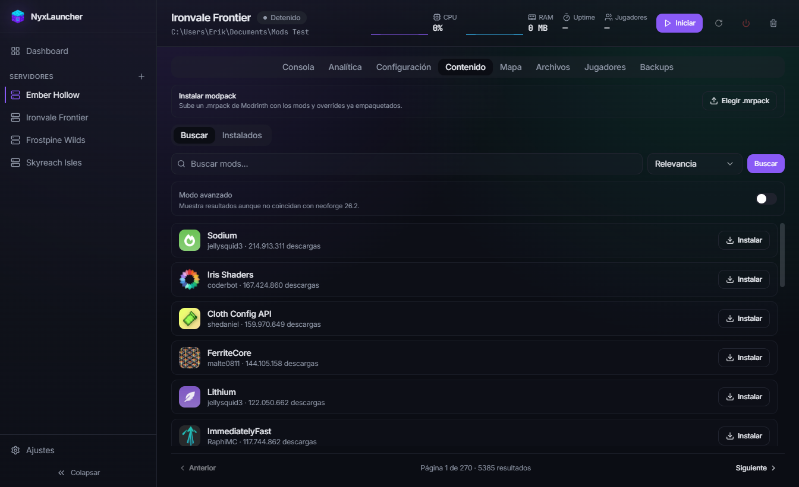
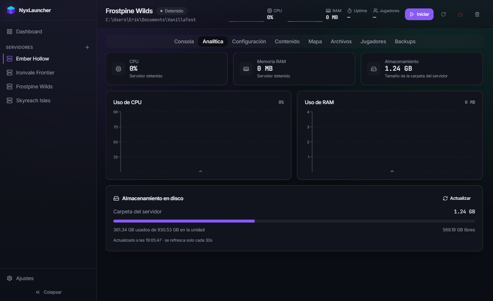

Multiservidor
Administra cuantos servidores quieras desde un único dashboard, con estado, CPU, RAM y uptime en vivo.
Arranca, monitoriza, mapea y configura Paper, Purpur, Folia, Fabric, Forge, NeoForge, vanilla y proxies como Velocity — sin tocar una terminal. De escritorio en Windows a un VPS con Docker, el mismo panel.
Gratis y de código abierto · No requiere cuenta
Todo lo que necesitas para llevar un servidor, en una sola app.
Administra cuantos servidores quieras desde un único dashboard, con estado, CPU, RAM y uptime en vivo.
Paper, Purpur, Folia, Fabric, Forge, NeoForge, vanilla y proxies (Velocity). Importa servidores existentes desde un .zip.
Busca, instala, actualiza y desinstala plugins y mods directamente desde Modrinth, con vista previa de cada proyecto. Para servidores de mods, también instala modpacks completos ya armados por la comunidad.
Genera un mapa 2D/3D navegable del mundo con BlueMap, integrado en la propia app. Funciona incluso en vanilla.
Gráficas de uso de CPU y RAM, y estadísticas de almacenamiento en disco.
Arranca, para y manda comandos sin abrir una ventana externa.
Navega, edita y gestiona los ficheros del servidor desde la propia app.
Whitelist, ops y baneos desde una interfaz visual.
Backups automáticos programados por servidor.
Abre el panel completo desde el navegador de otro dispositivo — tu móvil, otro PC, desde donde sea.
Accede desde cualquier dispositivo de tu propia WiFi. Escanea un código QR y entras.
Una red privada vía Tailscale — cero puertos expuestos a internet, solo tus propios aparatos.
Entra desde cualquier sitio vía Cloudflare Tunnel, con 2FA, aprobación de dispositivos y avisos por email.
¿Prefieres correrlo en un VPS o en tu NAS en vez de en tu propio Windows? El mismo panel, sin ventana de escritorio.
git clone https://github.com/LastWardMZ/nyxlauncher.git
cd nyxlauncher
cp .env.example .env
docker compose up -d nyxlauncherSynology, Unraid, cualquier VPS — un docker-compose.yml de referencia con dos modos de red según tu sistema.
Login con usuario y contraseña, 2FA, dispositivos de confianza — todo lo del acceso remoto, igual en Docker.
La imagen ya trae Java — descarga Paper, Purpur o lo que sea y arranca sin instalar nada más.
Así se ve por dentro.

